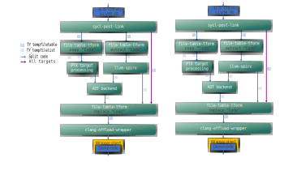
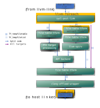

Non-Relocatable Device Code¶
Overview¶
By default, SYCL allows device code to be relocatable, where function calls outside
of the current translation unit are allowed using the SYCL_EXTERNAL attribute.
To implement this, the compiler linkes all device code together, resolving all
dependencies during the device linking process. This results in one large LLVM
module that subsequent steps of device linking use. For more information,
see Compiler And Runtime Design.
The tradeoff with this apporach is that having a single module may increase memory usage or run time of the compiler.
In the case where device code does not have any SYCL_EXTERNAL functions,
the -fno-sycl-rdc flag may be useful. With this flag specified, the compiler
will not link all device code into one large module. Instead, it will link
device code on a per-translation-unit basis,
which may improve runtime and memory usage of the compiler.
Device code linking with source files¶
Let’s take an example where the device linker has two input files: a.o and b.o, both containing device code. In this case, the device linking flow will look like the following:  Diagram 1. No-RDC Device object file link flows.
Device code is not linked together, and is processed seperately by the device linking backend
Device code linking with fat static archives¶
Next, let’s consider the case where the device compiler has a single input file, a fat static archive which itself contains a.o and b.o, both containing device code. In this case, the device linking flow will look like the following: 
Diagram 2. No-RDC Device fat static archive link flows.
Each object file inside the static archive is processed seperately.
llvm-foreach calls sycl-post-link once per object file. Since llvm-spirv
is only called once per compiler input, here only once for the static archive,
its input needs to be a single TY_tempfilelist containing
all modules. Since sycl-post-link can output multiple modules per-run and
it is called multiple times, the output of sycl-post-link is actually a
TY_tempfilelist where each entry is the path to another TY_tempfilelist.
A file-table-tform merge option is run to create the desired input